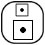
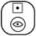
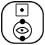
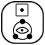
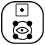
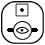
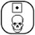

Pactum De Singularis Caelum
Covenant of One Heaven
 Objects (Supreme Collective)
Objects (Supreme Collective)
Article 60 - Celebration
By this Covenant, collective celebration shall be respected and recognized as an intrinsic element of our character and our personal journey. That we are departed shall not be a restriction for the continued celebration of milestones in our existences.
Not one memory, not one thought, not one cell, not one drop of awareness in the universe is forgotten, or is ignored. Nor is it the case than anything in the universe, especially awareness is static. That we depart as a child, does not mean we remain a childish mind. That we depart as an elderly man or woman, does not mean we are invalid and old in awareness in One Heaven.
That a baby is never born, does not mean its journey of awareness ends at that point if it and those spirits that have chosen to guard and nurture that awareness deem it not to be so.
This is the mystery of the afterlife in that it parallels life, because as men and women, this is how we seek and see our life journey, our journey of awareness as being so.
By this Covenant, the transition into spirit shall be celebrated in parallel to the celebrations of life in the physical. This shall be both in recognition that in spirit we are reborne, to begin our understanding of greater life as a child of awareness, even if we have lived a great and long life.
Furthermore, these organized celebrations are in recognition that when a man, or woman dies, their journey is never over, but just beginning.
| LEVEL | NAME | CELEBRATION TIME |
 |
Natal | Birth as a spirit |
 |
Baptism | Aged 2 |
 |
Adventus | Aged 12 |
 |
Bel Espirit | Aged 19 |
 |
Genius | Aged 33 |
 |
Beau Ideal | 50 to 70 |
| Haga Sofia | 70 to ? | |
 |
Resolution | The moment of dying to our selfish hates and angers, the lesser emotions of being a man or woman. |
| Union | The moment of union to higher spirit of both self and the universe as one. That we gain our true selves, by dying to our lesser selves. |